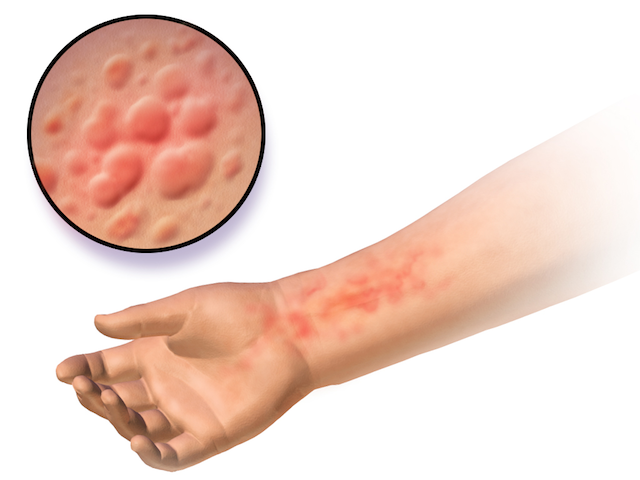
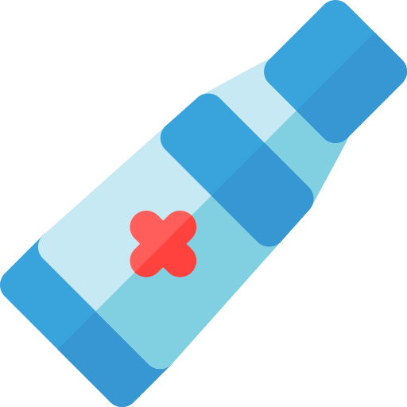

Poison Oak Symptoms and Treatments
Symptoms

All parts of poison oak contain poisonious oil, Urushiol. Urushiol is highly potent and will cause severe rash and discomfort. The oil binds with skin proteins within 10-15 minutes, making it hard to remove. Rashes can form anywhere from 6 hours to 5 days after exposure.
- Stage One: Mild irratation and itchiness.
- Stage Two: Red rash develops and gradually gets itchier. Swelling and hives can appear.
- Stage Three: Bumps can form and turn into blisters.

Quick Tips
- Wash with warm water and soap as soon as possible.
- Remove all clothing and items that were exposed.
- Do NOT burn poison oak. Inhaling the smoke can cause serious harm.
- Prevention is key. Look around the site and learn how to spot posion oak!
Treatments

Washing within 10 minutes of exposure can significantly reduce the chance of an allergic reaction.
- Remove oil: Before treating the rash, make sure all the Urushiol oil has been removed. Suggest using Tecnu Outdoor Skin Cleanser, since it more effective at removing the oil.
- Rash treatment: Use products that relieve symptoms (itching, burning, oozing, etc). Calagel and other products made by Tecnu are best.
- Maintenance: Poison Oak symptoms typically last 5-12 days. You can also use zinc oxide, benedryl, calamine lotion, and other topical products to ease discomfort.
Tecnu poison oak soap and other products are available at most drug stores. Please make sure the product is safe and will not exacerbate or irriate symptoms. Good luck!